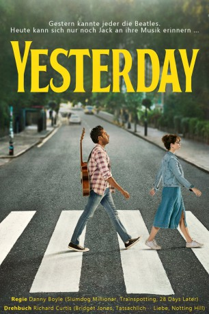

#11987 Yesterday
 gesehen am 16.11.2019
gesehen am 16.11.2019
 
 IMDB-Wertung: 6.9 / 10
IMDB-Wertung: 6.9 / 10  Tomatometer: 63
Tomatometer: 63  Metascore: 56
Metascore: 56 
Jack Malik ist ein leidenschaftlicher, doch leider genauso erfolgloser Singer-Songwriter. Eines Tages wird Jack während eines mysteriösen weltweiten Stromausfalls von einem Bus angefahren. Als er wieder zu Bewusstsein kommt, scheint zunächst alles wie immer. Beim harmlosen Dahinsingen eines eigentlich weltbekannten Songs muss Jack erst feststellen, dass seine Freunde noch nie etwas von den Beatles gehört haben und kommt kurz darauf zu der unglaublichen Erkenntnis, dass die ehemals berühmteste Band der Welt und ihre zeitlos-genialen Klassiker aus dem Gedächtnis der gesamten Menschheit ausradiert wurden – nur nicht aus seinem. Mit einem riesigen Fundus an unbekannten Welthits in der Tasche verzaubert Jack schnell sein ahnungsloses Publikum. Aber was nützt ihm all der Ruhm, wenn das, was er liebt, zurückbleibt?
Jahr: 2019
Dauer: 116 Minuten
FSK: 0
Land: England Studio: UPITonspuren: DTS - ,
Untertitel: Deutsch,
Auflösung: 1080p (1920x804) Größe: 7925 MB
Genre: Musik, Komödie, Fantasy, Liebe, Musical
Regisseur:  Danny Boyle
Danny Boyle
Drehbuch: Jack Barth, Richard Curtis, Richard Curtis
Soundtrack: Daniel Pemberton
Darsteller:
- Himesh Patel als Jack Malik
 Lily James als Ellie Appleton
Lily James als Ellie Appleton- Sophia Di Martino als Carol
- Ellise Chappell als Lucy
 Meera Syal als Sheila Malik
Meera Syal als Sheila Malik- Harry Michell als Nick
 Vincent Franklin als Brian
Vincent Franklin als Brian- Joel Fry als Rocky
- Michael Kiwanuka als Michael Kiwanuka
- Karma Sood als Young Jack
 Sanjeev Bhaskar als Jed Malik
Sanjeev Bhaskar als Jed Malik- Karl Theobald als Terry
 Alexander Arnold als Gavin
Alexander Arnold als Gavin- Dominic Coleman als Ipswich TV Host
- Ed Sheeran als Ed Sheeran
- Maryana Spivak als Alexa (Russian Stage Manager)
 Justin Edwards als Leo (Russian Stranger)
Justin Edwards als Leo (Russian Stranger) Kate McKinnon als Debra Hammer
Kate McKinnon als Debra Hammer Camilla Rutherford als Hilary
Camilla Rutherford als Hilary- Sarah Lancashire als Liz (Liverpool Stranger)
- Jaimie Kollmer als Young Ellie
- Sophie Mensah als Hotel Front Desk
- Helena Devereux als Commuter (Lime Street)
- Julian Feria als Commuter (Lime Street)
 Lamorne Morris als Head of Marketing
Lamorne Morris als Head of Marketing- Craig Rowin als Marketing Executive
 James Corden als James Corden
James Corden als James Corden- Cristina Dohmen als Local Newscaster
 Elizabeth Berrington als Hazel
Elizabeth Berrington als Hazel- Diana Pauline als Interviewer
- Díana Bermudez als Interviewer
- Sunny Yeo als Interviewer
- Nad Abdoolakhan als Security Guard (uncredited)
 Manoj Anand als Family at Concert (uncredited)
Manoj Anand als Family at Concert (uncredited)- Jennifer Armour als Investigative Journalist (uncredited)
- Mark Ivan Benfield als Beach Concert Spectator (uncredited)
- Lalit Bhusal als Family at Concert (uncredited)
- Christopher David Burton als Concert Spectator (uncredited)
 Robert Carlyle als John Lennon (uncredited)
Robert Carlyle als John Lennon (uncredited)- Camille Chen als Wendy (uncredited)
- David Thomas Coulter als Concert Spectator (uncredited)
 Ana de Armas als Roxanne (uncredited)
Ana de Armas als Roxanne (uncredited)- John Hales als Bride's Father (uncredited)
 Josh Harp als The Cowboy (uncredited)
Josh Harp als The Cowboy (uncredited)- Kyle James als Studio Executive (uncredited)
 Amrita Jazzmyn als Family at Concert (uncredited)
Amrita Jazzmyn als Family at Concert (uncredited)- Arun Kapur als Family at Concert (uncredited)
- David Lautman als Ringo Starr (uncredited)
- Ibrahim Majid als Journalist (uncredited)
 Bharat Mistri als Family at Concert (uncredited)
Bharat Mistri als Family at Concert (uncredited)
Datei: X:\2019(N-Z)\Yesterday (2019, FSK0, 1920x804).mkv seit 01.11.2019
Festplatte: HD 2018(G-Z)-2019(A-Z)
 Es gibt insgesamt 62 Filme in der Gruppe '2019(N-Z)'
Es gibt insgesamt 62 Filme in der Gruppe '2019(N-Z)'